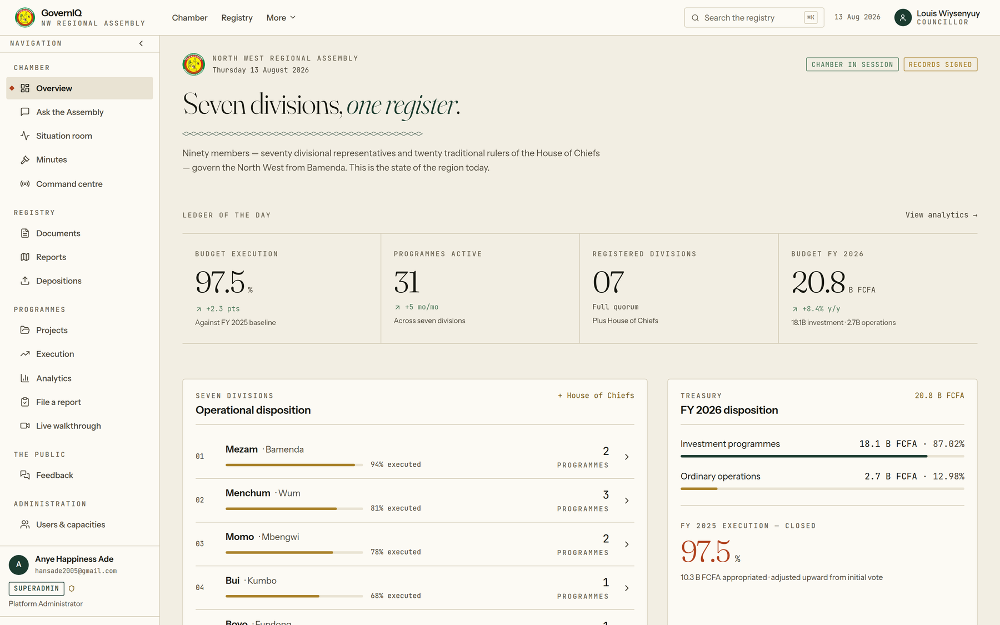
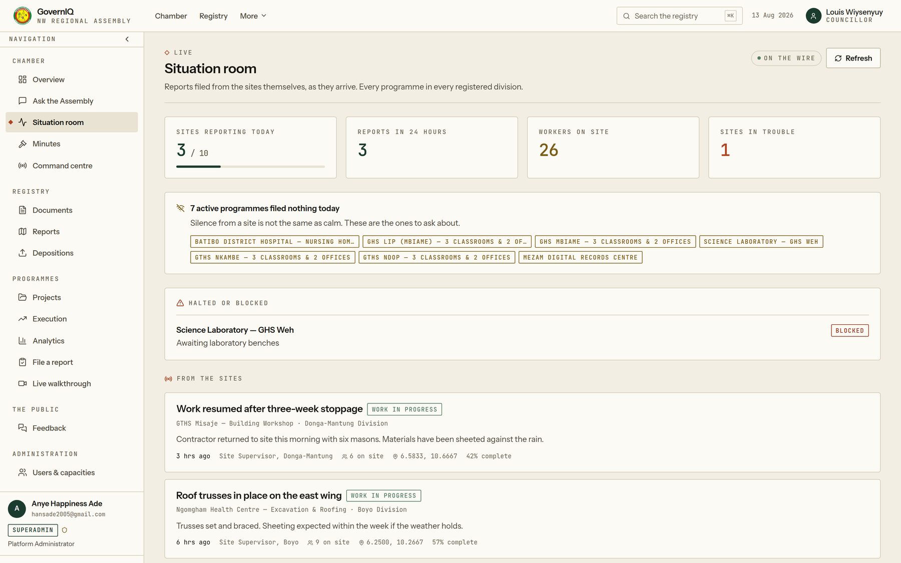
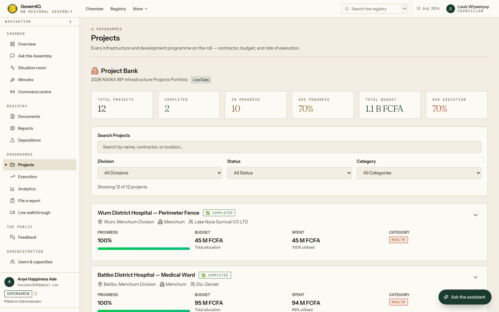
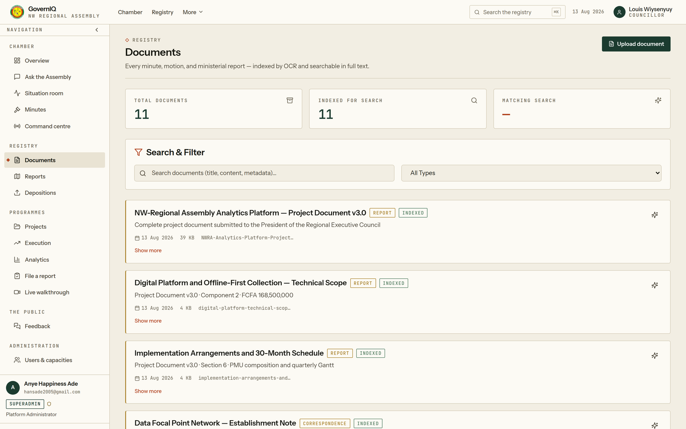
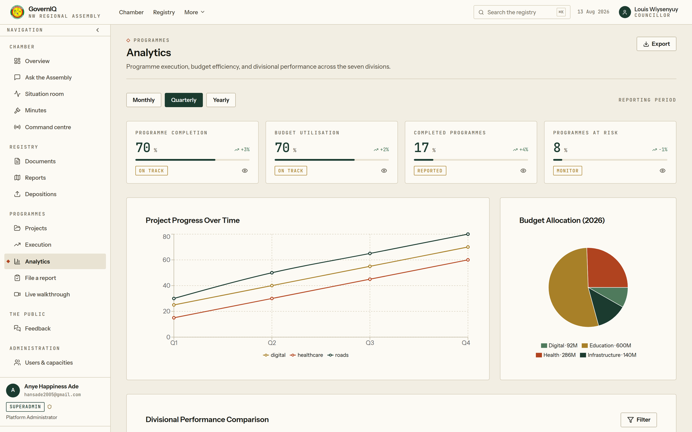
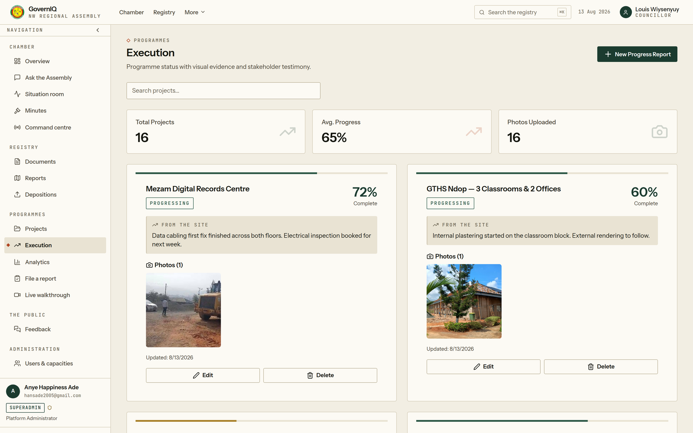

Seven divisions.
One register.
Same day.
The regional evidence base for the North West — a data network that works where the crisis is, and a Command Centre wall that puts the whole region on one screen in the Chamber.
Built and running today. This is not a proposal for software that might one day exist. Every screen in this deck is the live platform.
President, Regional Executive Council
The Assembly decides on evidence that arrives months after the decision.
Since 2017 the crisis has broken the reporting chain. Field agents cannot move freely. Sectoral delegations file three to nine months late. Six or more sub-divisions — Furu-Awa, Ako, Misaje, Nwa, Menchum Valley, parts of Boyo — are partially unreachable.
A culvert blocks at the Kumbo junction in January. The paper reaches the Chamber in September. By then the rains have taken the road, and the repair costs four times what it would have.
This is the cost of latency — not of bad intentions
It is not hypothetical. In 2021 the Assembly executed 60.6% of its budget, with two programmes near zero because works on destroyed schools never happened. Nobody could see it until the accounts were tabled the following March — nine months later.
The Specialised Finance Control Report 2025 and the May 2026 Ordinary Session minutes both call for a regional evidence base. This project is the answer to a request the Assembly has already made of itself.
And the record itself does not reconcile. The 2021 execution table tabled in the House puts investment at 945,767,797 and running at 901,767,797 — against a stated total of 1,727,014,461. The lines sum to 1,847,535,594. Neither rate follows from its own figures.
Minutes of the March 2022 Ordinary Session · recovered by OCR from the Assembly's own scan
GovernIQ collects the region's data where the crisis is, and puts it on one screen in the Chamber — the same day.
A network, not a vendor
63 trained agents — 1 Regional Data Officer, 7 Divisional Focal Points, 34 Council Correspondents and 21 Community Data Agents recruited from the communities they report on. An agent who lives in Furu-Awa can file from Furu-Awa on a day when no one can travel there.
Offline-first, by design
Collection continues through shutdowns and holds up to 30 days, syncing the moment a network returns, with SMS micro-reporting as a further fallback. Postgres with row-level security; encrypted in transit and at rest.
A wall that cannot be ignored
A 13 m² fine-pitch LED wall in the Assembly building, projecting the live region. Evidence that sits in a database gets ignored; evidence on the wall of the room where decisions are taken does not.

The Chamber view · live from the regional register
Built for the North West. Structurally identical everywhere decentralisation reached.
The 2019 General Code of Regional and Local Authorities created ten Regional Assemblies and transferred competences to 360 councils. Every one of them inherited the same reporting obligation and none of them inherited the instrument to meet it.
- SND-30 makes evidence-based planning a national requirement.
- The PPRD puts reconstruction money into the NW/SW and needs execution evidence to keep putting it there.
- FEICOM, PROLOG and donor windows all condition disbursement on verifiable reporting.
The North West is the hardest case, not the easiest. A platform proven under crisis conditions in Bamenda transfers to any region in the country without a single new assumption.
Not a mock-up.
A running system.
Every screen below is the live platform reading the live regional register. One workflow runs end to end: a field agent files from the site, the registry indexes it, the Chamber sees it, the citizen answers back.
- Programme register with budget, execution and division
- Document registry — upload, store, index, full-text search
- The House record since 2021, every entry against its source
- Session minutes: draft, adopt, publish
- Nine capacities, Superadmin to Citizen, permission-gated
- Live walkthroughs streamed from a phone at the site
- Citizen feedback routed to the responsible officer
- An assistant grounded on the register, not on guesswork
- Offline queue and background sync for the field PWA
- SMS micro-reporting fallback for shutdown conditions
- Predictive modules and GIS choropleth across 34 councils
- Eight standing-committee workspaces with drilldown
- The Command Centre wall, its control room and the open-data portal

The Situation Room · every site that filed today, and every one that did not

Programme register

Registry, full-text

Divisional analytics
One point of execution pays for the whole thing.
The Assembly manages FCFA 20.8 billion in 2026, of which 18.1 billion is investment. A single percentage point of improved execution is FCFA 208 million a year. The platform costs FCFA 48 million a year to run.
This is the conservative case: one point, and nothing else. The real prize is larger. In 2021 the Assembly left FCFA 1.196 billion of a 3 billion appropriation unspent — 39.4% — largely on works that stalled without anyone seeing in time. Recovering a tenth of that shortfall would pay the running cost twice over.
| Measure | FCFA | Of budget |
|---|---|---|
| Capital, one time | 487,500,000 | 2.34% |
| Recurrent, per year | 48,000,000 | 0.23% |
| Per division, per year | 6,857,000 | — |
| Per council, per year | 1,412,000 | — |
| Per data agent, over 30 months | 2,254,000 | — |
| Cost of doing nothing | unmeasured | — |
Share of budget computed against the adjusted FY 2026 envelope of FCFA 20.8 B
- An annual line in the NWRA operating budget — FCFA 48 M, institutionally anchored
- Open-data portal that makes partner co-financing auditable, and therefore renewable
- Replication to the other nine assemblies, with the NWRA as origin and reference
Most bidders bring slides. This one brings a login.
Reading the register…
Execution register · site narrative, photograph and citizen testimony, per programme
- The House record since 2021 — budgets, accounts, every decision
- 5 committee reports filed and retrievable
- 3 sittings minuted, drafted through to adoption
- 6 field site reports filed from the ground
- 5 citizen submissions received and routed
- Live snapshot streaming, proven from a phone at a site
Adoption rides on structures that already exist.
No new institution is created. Every Focal Point sits in a Senior Divisional Officer's office that is already there; every Correspondent sits in a council that already reports. We are wiring an existing chain, not building a parallel one.
Anchor
PMU stood up under the Secretary General. RDO recruited, 7 Divisional Focal Points trained and in post. Procurement plan approved.
Milestone · baseline collection opens in all 7 divisions
Reach
34 Council Correspondents and 21 Community Data Agents recruited locally, equipped with offline tablets and solar chargers under the crisis per-diem framework.
Milestone · the hard-to-reach sub-divisions start reporting
Pull
Command Centre commissioned. Eight committee workspaces roll out. The wall is what converts a reporting duty into a reporting habit — nobody wants their division blank on it.
Milestone · reporting lag falls below 30 days
Open
Public open-data portal. Citizen feedback loop live. Independent audit, handover, and the FCFA 48 M annual line written into the operating budget.
Milestone · ≥ 90% of divisions reporting on time
Donor project MIS
Offline-capable, but scoped to one programme — and it leaves when the programme closes.
Generic BI suites
Power BI, Tableau. Need clean feeds and a live connection. The licence renews forever.
GovernIQ
Offline-first — and the code, the data and the people all stay inside the Assembly.
Consultant dashboards
Beautiful for the launch. Stale by the second quarter. Nobody inside can change them.
And the incumbent: paper and Excel. Institutionally owned and offline by nature — but not aggregatable, and months late.
The advantage is structural, not technical.
Anyone can build a dashboard. What cannot be copied by a competing bid is a data collection network that is part of the region's governance rather than part of a supplier's contract.
- The network outlives the contract. The RDO function is written into the Secretariat General's organigram. When the project closes, the reporting chain remains.
- Crisis access is a protocol, not a promise. Tiered collection, locally-resident agents and no geo-tagging in red zones, co-signed with humanitarian partners.
- The platform already exists. Every rival bid starts at zero with a delivery risk. This one starts with a working system and a login the Assembly can test tonight.
- Nothing leaves the region — or the country. Data, credentials and administration sit with the NWRA, and the platform was built by a Cameroonian engineer who can change it. No licence renewal and no foreign supplier can hold the region's own record hostage.
Governed from the Chamber. Staffed from the divisions.
Not an external delivery team with a regional liaison. A regional structure, a Cameroonian engineer who built the system and can change it, and a technical unit inside the Assembly — the only arrangement that survives the end of the funding.
| Prof. Fru Fobuzshi Angwafo III | Chair · President, Regional Executive Council |
| Mr. Peter Yerima | Secretary General · hosts the Project Management Unit |
| Wiysenyuy Louis Nyuydzeran | Project conceptionist · Technical Lead |
| The eight standing committees | Co-owners of their own workspaces |
- Regional Data Officer — focal point to MINEPAT and INS
- IT Lead — platform, security, connectivity failover
- M&E Specialist — indicators, data-quality audit
- Procurement Officer — the Command Centre tender
- Communications Lead — briefings, data dictionary, press
Anye Happiness Ade
Principal architect · sole builder of GovernIQ
Cameroonian engineer, based in Douala. Founder and CTO of PiPilot, an agentic development platform through which users have shipped 2,000+ live sites; founder of TweetChat (50,000+ users) and co-founder of an engineering firm with 15+ delivered platforms across five sectors. 160,000+ users reached across four products built and operated end to end.
He has already shipped in production every capability this project depends on: multi-model inference with automatic failover, offline-first browser storage, and Supabase/Postgres with row-level security — the exact stack GovernIQ runs on.
M.S. Computer Science (AI), Stanford · B.Sc. Software Engineering · Google Professional ML Engineer · AWS Solutions Architect · five MIT-licensed packages published to npm.
The 2026–2031 mandate has just opened and 81 members were inducted under Resolution 2026/04 — the induction cohort and the platform rollout are the same cohort.
Resolution 2026/03 already commits the Assembly to the Digital Transformation Programme. This project is its instrument, not a new idea requiring a new mandate.
The PPRD reconstruction window is open now and conditions further disbursement on verifiable execution evidence the region cannot currently produce.
Milestone-gated. The Assembly never pays ahead of delivery.
Nothing is disbursed against a promise. Each tranche is released against an inspectable result, and the largest single payment lands only when the Command Centre is commissioned and projecting.
| Trigger | Share | FCFA |
|---|---|---|
| Contract signature | 20% | 97,500,000 |
| Platform v1 acceptance | 25% | 121,875,000 |
| Command Centre commissioning | 25% | 121,875,000 |
| Mid-term review | 20% | 97,500,000 |
| Final evaluation | 10% | 48,750,000 |
| Total envelope | 100% | 487,500,000 |
- LED wall pricing is indicative, P1.8/P2.0 fine-pitch, from current vendor quotations
- Agent per-diems follow the crisis-adapted framework, not standard mission rates
- Recurrent cost from Y3 assumes hosting, maintenance and 63 agent allowances
- No revenue is assumed from the open-data portal in the base case
Over 30 months, disbursed against five inspectable milestones, to establish the regional evidence base and commission the Command Centre at the Assembly building in Bamenda.
168.5 M · 34.6%
142.0 M · 29.1%
118.0 M · 24.2%
59.0 M · 12.1%
Two thirds of the envelope buys people and software. One quarter buys the room that makes them impossible to ignore.
| By | The Assembly will have |
|---|---|
| Q3 | RDO and 7 Divisional Focal Points in post; baseline collection open in all seven divisions |
| Q4 | Platform v1 accepted; 34 councils filing through it |
| Q5 | Command Centre commissioned and projecting the live region in this building |
| Q6 | Eight committee workspaces live; reporting lag under 30 days |
| Q8 | Public open-data portal; ≥ 90% of divisions reporting on time |
| Q10 | Independent audit, full handover, and FCFA 48 M written into the operating budget |
In a region where the crisis has cut the flow of information, this restores the evidence on which development depends — and it starts from a system that is already running, not from a blank page.
« Mi na u, U na mi, wi be wi »
I am you · You are me · We are one